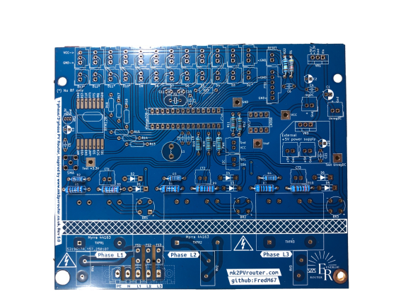
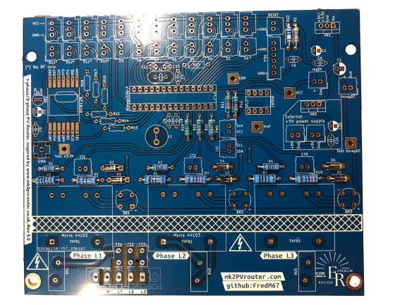
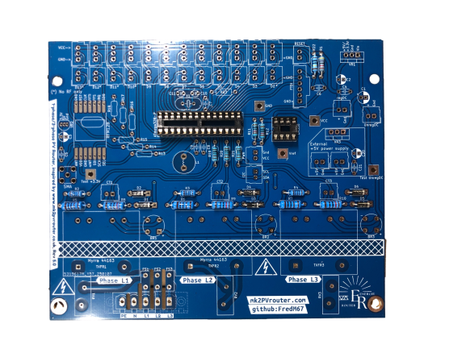
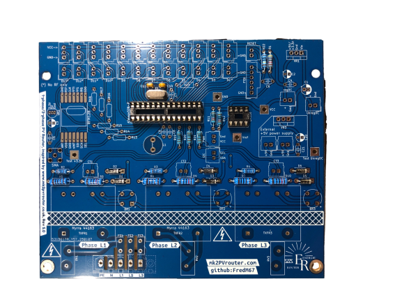
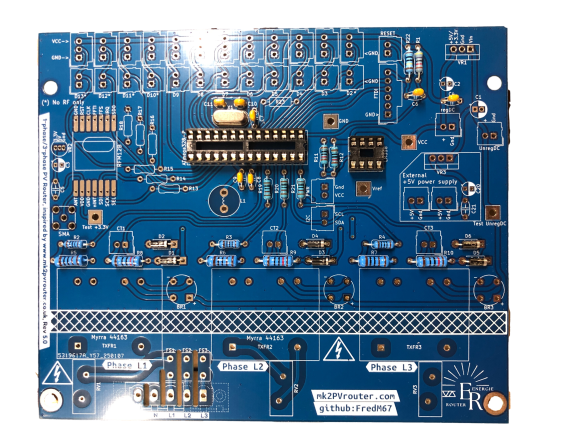
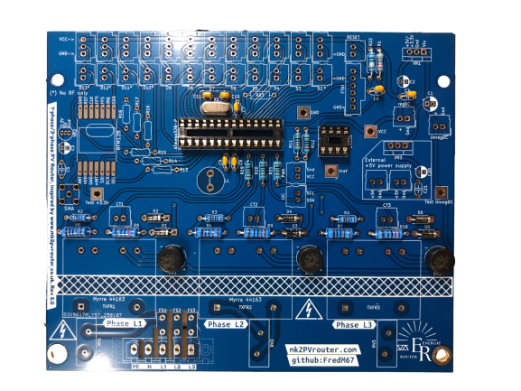
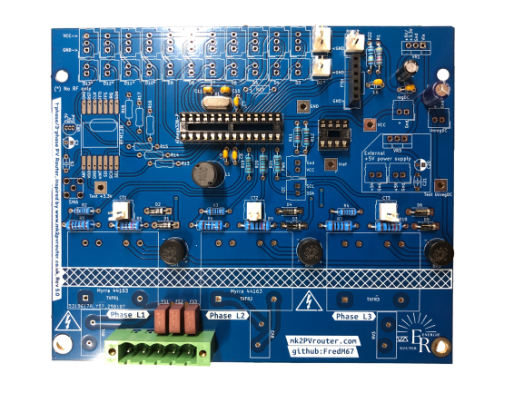
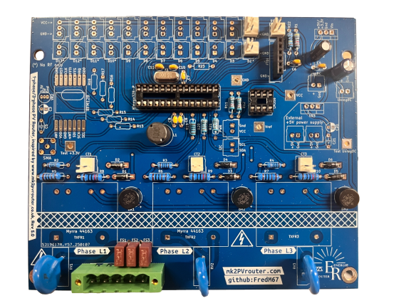
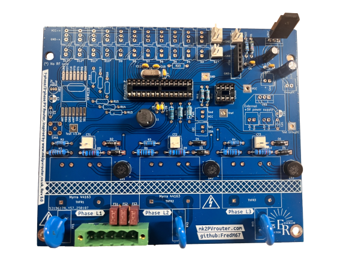
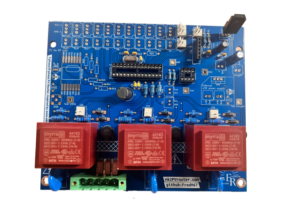

Carte-mère triphasée
Ordre de soudure
Voici l’ordre de soudure recommandé :
jumper·s,
résistances,
diodes,
socles de circuits intégrés,
oscillateur et ses 2 condensateurs associés,
condensateurs céramiques non polarisés,
pont·s de diodes,
fusibles,
connecteur·s d’alimentation,
socle FTDI,
socles de CTs et socle·s de sortie,
inductance,
condensateurs électrolytiques polarisés,
varistance·s,
régulateur de tension (format transistor),
transformateur·s
Note
Cette liste est exhaustive et peut varier en fonction de la configuration de votre carte mère.
Soudure des composants
Résistances
{kind=link}

Carte-mère avec résistances soudées
Diodes
{kind=link}

Carte-mère avec diodes soudées
Supports circuits intégrés
{kind=link}

Carte-mère avec supports CI soudés
Condensateurs céramiques et oscillateur
{kind=link}

Carte-mère avec oscillateur et ses condensateurs associés soudés
{kind=link}

Carte-mère avec condensateurs céramiques soudés
Ponts redresseurs ou ponts de diodes
{kind=link}

Carte-mère avec ponts redresseurs soudés
Fusibles
!! Manque photo !!
Connecteur secteur
!! Manque photo !!
Connecteurs SIL/Molex
!! Manque photo !!
Inductance
!! Manque photo !!
Condensateurs électrolytiques
{kind=link}

Carte-mère avec condensateurs électrolytiques soudés
Varistances
{kind=link}

Carte-mère avec varistances soudées
Régulateur de tension
{kind=link}

Carte-mère avec régulateur de tension soudé
Transformateurs
{kind=link}

Carte-mère avec transformateurs soudés